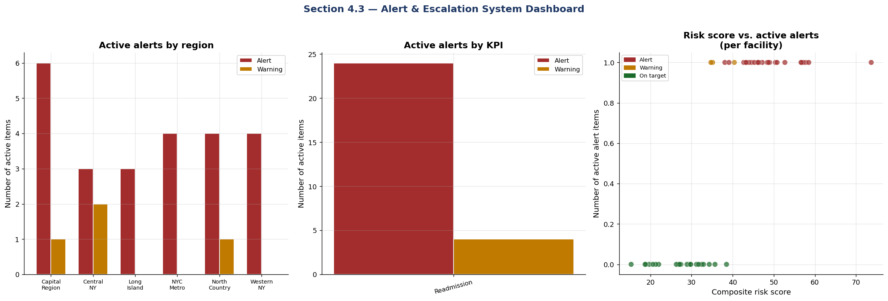

Alert & Escalation System
This section introduces an automated system designed to flag nursing home facilities that breach established KPI thresholds. The alert system provides structured escalation and clear response timelines based on the severity and persistence of performance issues:
Alert Detection: The system continuously monitors KPIs (such as 30-day readmission rate, staff turnover, and complaint investigation timeliness) for each facility. When a facility’s KPI exceeds (or falls below, if lower is better) specific thresholds, the system generates an alert.
Tiered Escalation Levels:
- ALERT: Triggered when a facility breaches a KPI threshold for two or more consecutive periods (e.g., months or quarters). Assigns responsibility to the Bureau Chief or Program Director, requiring action within 2 days. Implies the need for urgent investigation and intervention.
- WARNING: Triggered when a threshold is breached in the most recent period only. Assigns responsibility to the Program Manager, with a recommended response within 5 days. Indicates emerging risk.
- ON TARGET: No action required; the facility is operating within target ranges.
Automated Assignments and Timelines: Each alert record specifies the required escalation level, the assigned responder, and the due date for follow-up, ensuring accountability and timely corrective action.
This proactive alerting and escalation framework aims to enable faster detection and resolution of quality, staffing, and compliance problems, supporting data-driven oversight and improving resident outcomes.
Alert Generation Engine
This section introduces the logic that automatically scans facility KPIs and determines whether any performance thresholds have been breached. Facilities that exceed risk limits—for example, if their 30-day readmission rate or staff turnover is too high, or their complaint investigation timeliness is too low—are flagged with an alert or warning based on the severity. The logic not only identifies which KPI was breached, but also assigns escalation levels (ALERT vs. WARNING), recommends which staff role should be responsible for follow-up, and sets a target due date for corrective action.
This automated alert generation ensures that at-risk facilities are prioritized for intervention and that accountability and response timelines are clearly defined.
Output
Alert System — Active Log
=======================================================
Active ALERTS : 14 (response required within 2 business days)
Active WARNINGS: 10 (response required within 5 business days)
Total items : 24
Alerts by KPI:
alert_level ALERT WARNING
kpi_name
30-Day Readmission Rate 14 10The output above displays both a summary and a breakdown of active alerts and warnings generated by the alert system.
After generating a dataframe (df_alerts) containing all current alerts and warnings for each facility and relevant KPI, the code prints:
- The total number of “ALERTS” (critical items, requiring a response within 2 business days)
- The total number of “WARNINGS” (moderate items, response due within 5 business days)
- The overall number of active alert items
- A detailed table showing how many alerts and warnings exist for each KPI tracked in the system
This reporting provides a quick operational perspective on where immediate attention or follow-up is required.
Alert Visualization
Output
<Figure size 2160x720 with 3 Axes>The figure above provides a dashboard summary of the current facility alert landscape: - The first panel shows the number of active ALERT and WARNING items for each region, highlighting which areas have the most urgent concerns. - The second panel displays the count of active alerts by each KPI, helping to identify which KPIs are most frequently in alert or warning status. - The third panel plots each facility’s composite risk score against the number of active alert items, with color-coding for alert status, showing how risk scores correspond to the volume of active issues. This visualization gives a quick, actionable view for tracking regions, KPIs, and facilities that need attention.
Full Alert Log
Output
Active Alert Log — Top 20 items by priority
==========================================================================================
alert_level facility_id facility_name region \
6 ALERT NH-015 Glens Falls Care Center 3 Capital Region
22 ALERT NH-045 Glens Falls Care Center 8 Capital Region
9 ALERT NH-027 Troy Care Center 5 Capital Region
21 ALERT NH-044 Auburn Care Center 8 Central NY
12 ALERT NH-032 Utica Care Center 6 Central NY
3 ALERT NH-011 Hempstead Care Center 2 Long Island
18 ALERT NH-041 Hempstead Care Center 7 Long Island
23 ALERT NH-046 Bronx Care Center 8 NYC Metro
8 ALERT NH-022 Brooklyn Care Center 4 NYC Metro
10 ALERT NH-028 Queens Care Center 5 NYC Metro
17 ALERT NH-040 Staten Island Care Center 7 NYC Metro
11 ALERT NH-030 Canton Care Center 5 North Country
7 ALERT NH-019 Batavia Care Center 4 Western NY
4 ALERT NH-013 Lockport Care Center 3 Western NY
16 WARNING NH-039 Saratoga Springs Care Center 7 Capital Region
13 WARNING NH-033 Schenectady Care Center 6 Capital Region
5 WARNING NH-014 Auburn Care Center 3 Central NY
2 WARNING NH-008 Rome Care Center 2 Central NY
0 WARNING NH-005 Islip Care Center 1 Long Island
14 WARNING NH-034 Manhattan Care Center 6 NYC Metro
kpi_name current_value threshold \
6 30-Day Readmission Rate 22.2% > 22%
22 30-Day Readmission Rate 23.4% > 22%
9 30-Day Readmission Rate 22.7% > 22%
21 30-Day Readmission Rate 36.2% > 22%
12 30-Day Readmission Rate 22.6% > 22%
3 30-Day Readmission Rate 33.3% > 22%
18 30-Day Readmission Rate 24.4% > 22%
23 30-Day Readmission Rate 24.0% > 22%
8 30-Day Readmission Rate 25.4% > 22%
10 30-Day Readmission Rate 32.0% > 22%
17 30-Day Readmission Rate 26.3% > 22%
11 30-Day Readmission Rate 24.1% > 22%
7 30-Day Readmission Rate 28.6% > 22%
4 30-Day Readmission Rate 26.1% > 22%
16 30-Day Readmission Rate 19.0% > 18%
13 30-Day Readmission Rate 18.4% > 18%
5 30-Day Readmission Rate 21.7% > 18%
2 30-Day Readmission Rate 21.7% > 18%
0 30-Day Readmission Rate 18.2% > 18%
14 30-Day Readmission Rate 18.6% > 18%
assigned_to due_date \
6 Bureau Chief / Program Director May 08, 2026
22 Bureau Chief / Program Director May 08, 2026
9 Bureau Chief / Program Director May 08, 2026
21 Bureau Chief / Program Director May 08, 2026
12 Bureau Chief / Program Director May 08, 2026
3 Bureau Chief / Program Director May 08, 2026
18 Bureau Chief / Program Director May 08, 2026
23 Bureau Chief / Program Director May 08, 2026
8 Bureau Chief / Program Director May 08, 2026
10 Bureau Chief / Program Director May 08, 2026
17 Bureau Chief / Program Director May 08, 2026
11 Bureau Chief / Program Director May 08, 2026
7 Bureau Chief / Program Director May 08, 2026
4 Bureau Chief / Program Director May 08, 2026
16 Program Manager May 11, 2026
13 Program Manager May 11, 2026
5 Program Manager May 11, 2026
2 Program Manager May 11, 2026
0 Program Manager May 11, 2026
14 Program Manager May 11, 2026
action_required
6 Root cause analysis + corrective action plan
22 Root cause analysis + corrective action plan
9 Root cause analysis + corrective action plan
21 Root cause analysis + corrective action plan
12 Root cause analysis + corrective action plan
3 Root cause analysis + corrective action plan
18 Root cause analysis + corrective action plan
23 Root cause analysis + corrective action plan
8 Root cause analysis + corrective action plan
10 Root cause analysis + corrective action plan
17 Root cause analysis + corrective action plan
11 Root cause analysis + corrective action plan
7 Root cause analysis + corrective action plan
4 Root cause analysis + corrective action plan
16 Investigate and document findings
13 Investigate and document findings
5 Investigate and document findings
2 Investigate and document findings
0 Investigate and document findings
14 Investigate and document findings
⚠️ fac_dq_report is not defined; skipping dq_facility_report.csv export.
✅ All outputs exported:
kpi_mart_latest.csv — facility KPI snapshot
active_alert_log.csv — full alert log
kpi_readmission_monthly.csv — monthly readmission KPI
kpi_turnover_quarterly.csv — quarterly turnover KPI
dq_facility_report.csv — data quality report
fig_dq_dashboard.png — Section 3.2 figure
fig_executive_scorecard.png — Section 4.1 figure
fig_program_monitor.png — Section 4.2 figure
fig_alert_dashboard.png — Section 4.3 figureSummary
This notebook implements the complete OALTC KPI Tracking Framework — Sections 3 & 4:
| Component | What was built |
|---|---|
| 3.1 BigQuery data lake | Facility dimension · nh_discharge_events · workforce_quarterly · complaint_investigations via google-cloud-bigquery |
| 3.2 Data quality | Six-dimension DQ engine (completeness, validity, timeliness, consistency, accuracy, uniqueness) |
| 3.3 KPI calculation | Five KPI pipelines as pandas functions mirroring BigQuery SQL views |
| 4.1 Executive Scorecard | Statewide trend charts · pillar summary table |
| 4.2 Program Monitor | Facility rankings · risk scatter · ownership analysis |
| 4.3 Alert System | Automated alert generation · escalation assignments · region/KPI breakdowns |
Next steps for production
- Schedule notebook execution via Vertex AI Pipelines or Airflow
- Connect figures to Looker Studio using BigQuery as data source
- Add
smtplibor SendGrid calls to automate alert email distribution
